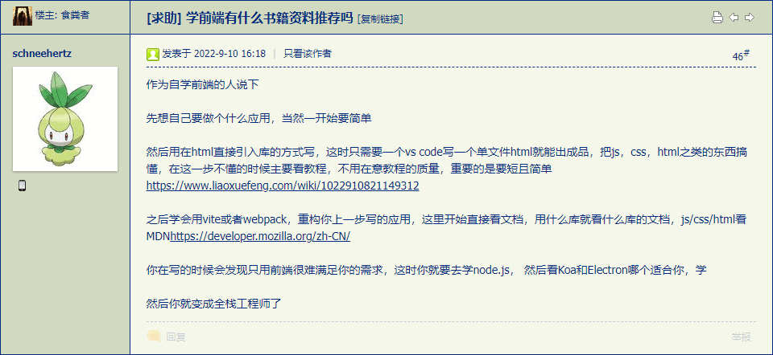
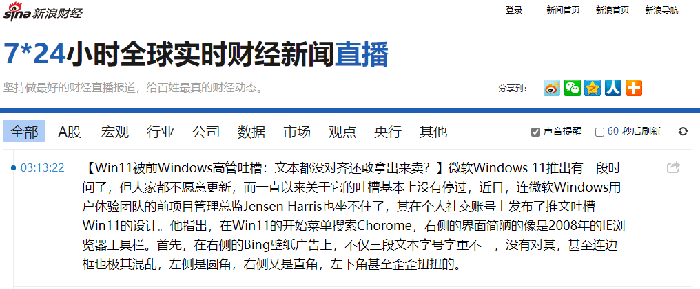
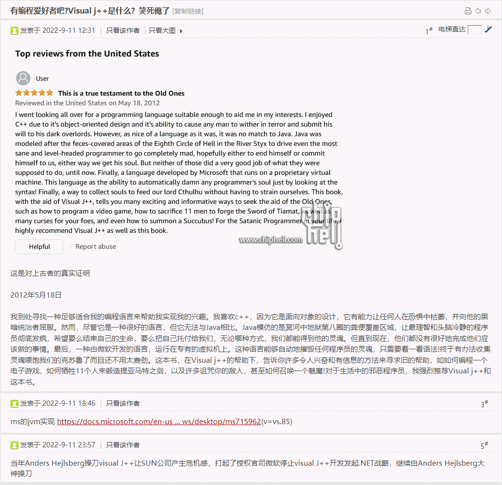

fanhan-inside 2022-09-10T13:43:47Z 长话短说⸺相关链接随后补上⸺今天在《日志＃270》 当中提出「阴阳日记」个人企划的时候，今天的真・日记已经写了不少了，真开工最早也得等明天，所以今天日记当中还有点能不做修改直接发表的内容，找个中心思想阐述主要内容于此。
先看刺激脑洞的情报兼素材：
范某截图备份于此

当时我就在真・日记当中写了以下几段话：
囧斋起居注・日记
看到了这个，和以前说过的一样，个人项目肯定与公司的业务领域和技术栈毫无关系，还是我刻意的「躲着」 ，原公司换技术栈若是换到我业余钻研的那条船上，我能立刻再换一条船接舷白刃肉搏好比「陆军海战队」做派……而不是如同某些「话术师」叫嚣的那样「业余时间也要钻研技术，哪怕自掏腰包用“个人项目”锻炼，将来嘛（你业余时间的个人成果是公司的，你工作时间的个人进步还是公司的，咱人民民主专政铁拳武德充沛侠义无双一力降十会咋地吧 ）好日子还在后头哩！」
真能找个免费主机托管（有服务器操作，而不是静态网站托管），个人博客站点从建立开始就会「全栈」⸺只不过「技术栈」不好说是什么⸺无论什么，dotNet/Java/PHP/RoR……或是最时髦的Node.js，也许是最土的FastCGI⸺就是上世纪末风靡一时的用Perl/Python/Tcl那种，ActiveState就是靠这个「多语种」技术栈混出头的⸺我都能在没有对托管运营商有任何期待（最不济也是「静态网站」嘛）和技术假设前提的情况下逐步迭代到与时俱进。
从这个角度回顾「废材争霸（StuffCraft） 」，当时顺手用了同样的技术栈，因为没想「发布（release）」，就如同平时有个啥问题顺手用同样的技术写个几行代码解决一样。那么现在既然已经发布了，还是「Mozilla Public License」，就得注意。虽然在业务上与原公司及接触过的那许多客户都「毫无关系」，但考虑与幕后黑手串通一气的家贼以及无孔不入的江湖好汉草莽豪杰地痞流氓泼皮无赖，还是应该「料敌从宽」不惮以最大的恶意揣测⸺接触过周边各色人等之后感觉只要按照十年来如同《动物哥布林 世界》《人与自然迷宫地下城恶人谷 》观察到的「野生动物行为惯性」顺理成章的推演，就能揣测到它们「按照唯物主义原则在“胎里坏”基因钦定的劣根性约束下“没有自由意志的本色出演”」之必然结果，一点都不需要什么「恶意」⸺从而提高觉悟和警惕性。
现在一拍脑袋想对策也不麻烦，初步决定搞成「全技术栈」项目，（在设计优先的前提下）现在已经上传的实现「src/dotNet」源码按照具体细节改名为「src/WinForm」。还有个平行的「src/WPF」，这是2010年7月23日之前已经出现但是原公司甲及接触到的客户都没有采用的「与时俱进」技术栈，也是截止到2013年2月在原公司乙当中接触到的项目都没有使用过的技术栈，后来的什么桌面框架先不管了。再往后，就把Java/Objective-C……乃至Qt/GTK+、各种脚本的C/S、B/S架构……都加上去，自我抄袭借鉴主要是剽窃创意⸺这才是今天看到的舆论之风向「以自我锻炼主动扩展情报工学“舒适区”为目的的“个人项目”」之特点⸺于是就有足够的说服力了也。
然后继续搜集情报兼素材：
范某截图备份于此
各位不觉得我最近码字「波折号」「括号」用得比较多么？套用现代汉语语法 ，就是插入语和补语成分过多，口语化比例倒是保持不变。
理由如下：
囧斋随笔
前文所说，为了能够让中文输入法使用日语布局，改了注册表。大致上一切都好，唯一的麻烦是波折号的输入。因为几乎所有拼音输入法中打波折号偏偏就是敲下划线这个键。既然输入法的开发人员死盯美式键盘，自然对这个第102号键不做处理。那么自然波折号无论如何也打不出来。这也就是一段时间内我在龙空上发言都用省略号代替波折号的缘故。
咋办？老人家教导我们说，自己动手丰衣足食。
作为MSDN订阅者，有个好处就是能获得“Windows Device Development Kit”。曾几何时，作为Windows开发的终极道具DDK再也不能免费下载喽～～～
⸺《关于输入法》（七篇合集）
所以换回「美式键盘」之后当然该用波折号的都能用波折号了。
卡壳世界The Kock World ・注释scholium
『而是通过铁与血』（sondern durch Eisen und Blut）……这是俾斯麦的演讲，完整的那一句是「当代的重大问题不是通过演说与多数议决所能解决的⸺这正是1848年和1849年所犯的错误⸺而是要用铁血来解决 」。
德语的特点很多网友都知道了，一言以蔽之就是「繁琐」，经常从句套从句，还有令人深恶痛绝的「框式结构」 ，经常开头念一个助动词，念了一页多才出来个实义动词结尾，志得意满的等着听众鼓掌，这时候「翻译工作者」尤其是「同声传译」已经忘了这一页多当中那牛哔哄哄的发言人都说了些什么了。
不过呢，多年前在之江临安「原创文学论坛」已经提到了，当代德语在互联网上也在进化。德语没有「标准语」，用户也不限于德意志民族，所以框式结构的语法很多时候在随意发言中被忽略了。尤其是某些德语论坛，来自东欧的斯拉夫人发言的时候，分离动词基本上都不拆开，实义动词也经常直接放在助动词后面，正如英语那样。
⸺《范版西幻设定集》注释〔卅五〕
所以在白金汉宫老佛爷已经挂掉，《设定集》第二辑〈警惕月球势力打雌权主义牌！ 〉题图所暗示的情节还没来及展开就要收尾的时候⸺如果2021年6月23日人民警察没有收到电话通知不知为啥就要约谈我然后莫名其妙聊了几个小时的话，到现在一年多了「第二辑」正文都应该差不多了⸺那么码字流程需要「止损」开启后备计划。
于是「近朱者赤近墨者黑の潜意识翻译腔」也得看环境吖，最近在「头疼医头脚疼医脚 」的“形势一片大坏不是小坏更不是不坏”的情况下，德语（以及硬说是德语的意第绪语）相关内容琢磨得比较多，结合「终于能痛快敲出波折号了吖」的现状，当然「从句应套尽套，框式结构应拖尽拖」喽～～～
顺便吐槽：
范版吐槽或狂夫扯淡
就在今天还特意强调了数学渣的职业习惯内化于心外化于行⸺还给出了结合时事与现实状况而微调既定方针政策路线计划并完成的具体例证「苏格兰裙 」⸺估计读者们看「无一字无来历」「不惮以最大的恶意揣测」「料敌从宽」「未算胜先算败」「谋定而后动」「有备无患」……之类空话套话都看烦了，那么为啥有些逗哔事到临头了还以为自己狗仗人势狐假虎威凭借谁或啥的「人脉」于是24×7全方位巡查监视无死角就能「一切尽在掌握中」呢？
fanhan-inside 2022-09-11T02:31:03Z 补充后续：
范某截图备份于此
是在我于日记中写了「废材争霸（StuffCraft）」的「下一步（NeXTStep）」之后出现的，可能是巧合。
因为时代局限性，当初的各种技术栈就是以「客户端」为主，各位读者可以回忆Mozilla啥时候在Google的扶持下高举反MSIE大旗叫嚣「坚决服从W3C的集中统一领导」并在FireFox以身作则的，还可以回忆Google啥时候看着“形势一片大好不是小好更不是不好”就把Mozilla踢了自己开工搞一套Chrome的……当代党国栋梁青年才俊嘴里的那些「新鲜名词」，基本上都局限在「前端」，都是在那之后才蓬勃发展起来的，还走过若干弯路经过多次迭代。
若说「纯・前端」也就是仅仅局限在浏览器当中运行毫无服务器操作的那些技术，最新进展已经到了「WASM」（就是Mozilla率先开发并推广然后被业内广泛接纳 ）了，我在个人博客站点之上都「试验过」那些必要的「准备工作」了，再列举一遍几个测试页面：
可能有读者，尤其是业内，看着上面这几段有点 莫名其妙，「这些事我们知道吖，写它干嘛」。
因为作者要甩包袱。
开宗明义的情报当中，开头就提到了「VSCode」工作环境（微软），结尾还提到了「Electron」多平台框架（谷歌），而中间则给出了「Mozilla」提供的开发文档……各位读者不觉得有些「国社 际主义雨露均沾」的意思么？
事实如此，不能说是啥阴谋诡计之破绽，只不过运用职业习惯略微一分析，就能找到「突破口」：微软谷歌都混得风生水起还惺惺相惜甚至有联手对抗苹果顺便连带手做掉一帮虾兵蟹将的企图，那么多年苦主Mozilla在干嘛？以前还有雄心壮志，能推出XUL与XAML叫板⸺虽然雷声大雨点小吧⸺而在火狐宽臀（FireFox Quantum）新时代引擎出台之后，类似的「框架」哪儿去了？
长话短说吧，「正好」⸺这只是修辞而已，孤陋寡闻井底之蛙赛博朋克半桶水能想到的，真の情报工学高学历精英早就想到了⸺市面上有个停滞了几年的 「文本编辑器兼文字处理器」⸺有收费功能⸺唤作「BlueGriffon 」：The next-gen Web and EPUB Editor based on the rendering engine of Firefox®
也就是说，使用「Electron」框架的「VSCode」这个「文本编辑器」能干的事情，理论上使用「火狐宽臀」框架的啥项目也可以做到，不仅作为「文本编辑器」，还有向着「文字处理器」方向发展的野望 ，正如同那许多依赖Markdown格式和「前端」框架实现「所见即所得」界面的应用⸺尤其是与收费的Typora竞争的笔记软件，包括但不限于Obsidian、Zettlr、MarkText⸺一般，这个方向也很有前途⸺丑话说在前面，未必有钱途，先例有得是 ，不是自己收费被打脸，就是企图创业被江湖好汉草莽豪杰地痞流氓泼皮无赖掴面，还有大手会社法务部伙同人民民主专政铁拳集体包庇之。
来，满口主旋律正能量的新时代青年才俊，想不想试试？哪怕是作为「毕业设计」呢，就是不知道「导师」捞不着钱是否会摇身一变黑化为「迪士尼旗下ESPN赞助的关系户主要的宣传阵地虎扑上聚集的脑壳里只有红白两色液体的肌肉棒子」炒作的之江大学博士生导师系列重要讲话精神当中的「丁春秋」「岳不群」「成昆」「戚长发」……咱孤苦伶仃可怜废柴草根文盲矬胖老穷光棍汉精神病仆街写手不入流码农数学渣宅男黑客活雷锋烟枪酒鬼饭桶缩卵怂货窝囊废可是已经提醒过了啊，各位年轻读者三思而后行吧。
范某截图备份于此
如果问我对「前端」「客户端」的意见，十年前⸺如果从建立个人博客站点在GitHub等第三方平台「留下痕迹」计算也至少五年前⸺说过了现在我已经是「用户」了，我用以「前端」技术构建的「文本编辑器」和「文字处理器」都觉得比较卡⸺是不是这时候又有二道贩子开始嘲笑我的书房里老迈年高的台式机和笔记本然后推销「适合3A大作の最新显卡」了⸺可能的话还是希望尽量用本地代码实现。
这里有个插曲，在《三自运动插曲：嗟叹之不足故咏歌之》 当中提到了：
囧斋随笔
再说几句。日记里提到了用Mozilla内核伪装IE，还起名「Web Navigator」，肯定会有人联想到当年由于IE绑定在Windows之内而导致「网景」惨败的旧事。
不过从技术角度讲，唤作「IE」的这个软件包的「安装」单位，可不仅仅是那个窗口以及附带的Trident排版引擎，能显示HTML就算成功，如今码农都知道Web技术依赖多少内容和模块，支持ECMAScript还仅仅是基本需求。
另外，日记里还提到了「DirectX」，于是昨晚爬起来之后上网乱转，又发现了娱乐至死の逗哔炒作「电子竞技选手」炫耀手速相关段子、截图、短视频。咱只能说，这批忠君爱国与时俱进童年才俊也就这点见识了。
从码农角度讲，在最新的跨平台的「.Net Core」当中，仅限Windows环境的组件，是「桌面应用的图形用户界面」：WinForm、WPF。前者依赖「GDI+」，还是Win32的扩展，效果好了点，但不能使用硬件加速；后者则依赖「DirectX」，可以利用显卡功能提供硬件加速，实现更充沛的效果。
现在各位读者知道孤苦伶仃可怜废柴草根文盲矬胖老穷光棍汉精神病仆街写手不入流码农数学渣宅男黑客活雷锋烟枪酒鬼饭桶缩卵怂货窝囊废特意提及「废材争霸（StuffCraft）」（在设计到位前提下）接下来的第一步就是继续推进「src/WinForm」并建立与并列的「src/WPF」是什么意思了么？
我不需要关心机子上有啥「显卡」 ⸺有微软（以后还会扩展到苹果、谷歌以及其它制造商）替我关心⸺我只需要「使用硬件加速」尽量提升「本地」码字的工作效率。
这么说，各位读者⸺哪怕不是业内⸺能听明白么？
fanhan-inside 2022-09-11T06:16:50Z 顺便插播「形势一片大坏不是小坏更不是不坏」的新闻：
范某截图备份于此
以及个人日记截图：
囧斋起居注・日记
本来没想发的，不过因为吃饱了之后正在写心得体会的时候腿疼，同时听见外面狗叫很烦，想起了8月25日也是半夜在家写日记谈及「拉面范」乃至今麦郎产品线，然后停电，凌晨出家门就有中年妇女迎面狂喷的往事⸺这摄像头后和窃听器后的24×7全方位巡查监视无死角狐假虎威狗仗人势的间谍特务卧底把十步一岗五步一哨夜不闭户路不拾遗天子脚下渗透得如同筛子一般嘛，自己开会拿着文件副本，正本跑到德州农工大学那里去了时代不同了，自己日记还能拿着正本，副本早就有家贼被策反之后主动提供给大手情报机构扫描存档备案 ⸺然后特意加上了问候「情报工学神童」的那一句，略微调整语气，截图，上传。
各位读者可以看看「老迈年高的情报工学从业者」当年都干了些什么，形成的思维定势是什么，对各种（哪怕与政治和意识形态毫无关系的民生）新闻的第一反应有哪些，深入思考的时候思路会发散到哪些方向去，与当代这帮满口「你听都没听说过的新鲜名词」之童年才俊之间的区别在哪里。
fanhan-inside 2022-09-12T00:20:51Z 补充情报兼素材：
范某截图备份于此


第一条，应该是「用户」共识……然后为啥繁荣的简体中文互联网上就此话题总有「敢怒不敢言」现象呢？
还有大批自诩生在新中国长在红旗下的党国栋梁童年才俊口口声声宣称「历史の五对负重轮滚滚向前，不自量力螳臂挡车の跳梁小丑必将被“保安”碾为齑粉并由“保洁”扫入历史的垃圾堆 」，口气和蔼一点的也不过是说「逝者如斯夫不舍昼夜，光阴似箭不等人，每个百善の新时代都有大批人掉队⸺来自万恶的旧社会的他们，已经（经由“新731部队投放病毒而”伤病缠身）走不动了 」。
第二条，应该是「业内」共识……情报工学发展史暂略，这位「大神」就是Object Pascal的设计者和编译器实现者⸺当年「挨了微软三板斧还能活下来，是Borland内功精湛 」的说法，后来就无声无息了。
如果说这是微软「商战伎俩」还有理由可以嗤之以鼻，那么「Visual Basic」产品线被砍，曾经让多少境内「抱紧微软大腿の业内精英」如丧考妣，之前就是它们指天发誓拍胸脯保证「放心吧，微软“亲儿子”Basic的地位稳得一哔，真不管了你把我脑袋拎走 」⸺结果微软就是砍了VB不管了，但还留下VBA这个残渣⸺暂时不敢大刀阔斧与时俱进，因为Office用户比码农更顽固并且腰包更鼓。
相关内容在《囧斋随笔・赛博朋克》当中说过了，当年以美帝灯塔国情报工学精英为主力的全球信息技术相关从业者，都坚持「微软用啥我用啥，微软吹啥我先等等 」的态度，都是血泪教训（Borland不是个例，因为血条最长撑到最后所以在色目情报掮客小作文当中作为“反派”出场的次数最多而已），此处不再重复。
其它「边角料」通常还煞有其事的塞进「Visual Studio」「Office」套装里面，比方说「Visual InterDev」「InfoPath」，我都（试）用过。
前者用来写个ASP网站，因为找不到主机托管而没有「上线」，当时原公司的网页项目完全是在MSIE当中用ActiveX实现的。那么尖锐的问题就来了：各位读者认为用C++写的在浏览器当中计算最优化问题的ActiveX控件和调用OpenGL在网页中显示3D图像的ActiveX控件 ……其技术「分类」到底是「前端」还是「后端」？
后者不提了，到现在「办公自动化」的纯・电子版文书，尤其是「填表」这种日常，还是PDF加「电子印章」，或者还是在WinXP/MSIE当中按照「老一套」政治规矩和组织纪律用ActiveX控件实现。那么尖锐的问题又来了：〔略〕。
第三条，应该是「政治」共识。有个旧闻，就是「Microsoft™ Office® 2003」丢掉中华人民共和国中央人民政府今天成立了采购大单 的往事⸺订单交给了金山，买了大批WPS许可⸺当时「微软员工」还酸溜溜的阴阳怪气「毕竟党库通国库嘛」碰上红小兵找茬就缩了「我说的是对岸，啊，对岸」。
原因很简单，金山接了「政治任务」可以输入「七种少数民族文字」，而微软「眼高过顶」只肯对应「联合国六种工作语言（包括汉语）及三种法西斯语言」，于是「（时任）出版怪人」那等身的著作当然就需要WPS编纂了。
后来嘛，微软痛定思痛，「钱这东西好比石油天然气，还能说这张钞票民主自由，那张钞票专制独裁不成？ 」也深耕境内犄角旮旯并（在“有关部门”协助下）派遣大批「异族语兲才」深入基层与杂胡野种谈笑风生去了，然后又把「政府采购大单」抢回来了。
这段与「瘟叉屁上海市政府版俩系统文件被诺顿“误杀” 」风波同时出现的业内热点，有多少当代情报工学业内人士还记着？用不着去问被嘲笑为「玩梗红小鬼」还满嘴委屈的正在“学习强国”的童年才俊或着已经走上工作岗位各个“自知之明”爆表的青年才俊，事发当时的他们，不是父母还没交配呢就是好不容易上了户口但还没断奶。
就事论事，回到技术话题本身。若是「人文社会科学」领域的技术，在《知乎问答№077：如何评价哈萨克斯坦拉丁化哈萨克文字母表？》 当中已经提到了「拉丁维文」「拉丁乌兹别克文」的（在“学术”上的）前因后果，而（在“学术圈juàn ”当中的）来龙去脉，要看「新疆大学」在2002-2004年的动向，技术上「拉丁维文」定稿很早，政治上就不一样了。
相关动向⸺比方说十步一岗五步一哨夜不闭户路不拾遗兲子脚下首善之区国际一流和谐宜居之都到底有多少江湖好汉草莽豪杰地痞流氓泼皮无赖出没，「湘潭铺子」保安是否是新疆兵团骨干也就是当年上天山八千湘女其中若干位的孩子「回娘家省亲」然后被派遣到各地「帮娘家做事」，各位读者知道的就知道，不知道的欢迎来城乡结合部吉普赛社区「军休所」考察被唯物主义“胎里坏”基因所钦定的“劣根性”操纵的“没有自由意志”的哥布林那“一切尽在雅威/阿拉祂老人家掌握中”的郁金香（还是“国泰”味）般高雅尊贵の加尔文主义活动规律。
知道当代生活节奏快，尤其是童年才俊嫖娼还得到处赶场，一秒钟几千万蝌蚪上下，忙着呢⸺于是这里就言简意赅的提一句当时「“汉”学家」针锋相对的「学术」探讨：「一个中心是“忠”，两个中心是“患”」 ⸺摘自《人民子弟兵报》某期某版某文章。
若是「信息」技术，逗哔时期的逗哔作品当中已经写出「主角」倚仗自己的「象形及表意文字的大字符集用户出身」一定要拔苗助长强行推广Unicode，就提到了「蛆体字」（无论横向还是纵向）都有单独、字头、字中、字尾四种形式。
小说家言只能简单提及，技术上的展开就多了，包括但不限于《“巴黎忽传斩路易，初闻涕泪满衣裳”》 当中搜集的直说是「借鉴八思巴文」获得灵感的一种设计方案。总之在2004年当时，微软已经实现了很久的技术，金山接了政治任务之后也已经实现的功能，我拿来主义随便耍耍「长长见识」之后就放下了。
⸺但毕竟这扇门已经拉开或推开一条门缝，是否登堂入室或破门而入，还是扭头便走，当然要保留变化嘛⸺谁规定过但凡写下阿拉伯字母哪怕随手画条蛆被人工智障识别为阿拉伯字母表成员之后就必须皈依绿教，否则会有十五个沙特厨子从外交免检通道大摇大摆入境并运作「人脉」诈骗目标去「大绿门派出所」更换为「一小撮或曰“少数”民族」身份证，不然就会作为食材以炮制「“清真美食”卡舒吉」？
然后看见「msklc」关键字，顺便就是扣题⸺昨天晚上在身体肿胀疼痛并头昏脑胀之余，把日志目录当中自己的发言都安插了「时空道标」供交叉引用时链接指向⸺现在可以派上用场了：
「下一步」（“NeXTStep”）
作为对于字符集、字体、输入法有较高期待的个人码字需求来说，“下一步（‘NeXTStep’）” 回到了十五年前的既定目标当中⸺自定义键盘以便于输入个人所需字符。
顺便补充「不忘初心牢记使命」的阶段性前情提要：
本来开始关注Markdown就是为了码字时表现力更符合作者想定的效果，做不到才用纯HTML手写，我自己有「在“文本编辑器”当中看五颜六色纯文本不眼晕，在“文字处理器”当中看充沛着鬼画符的数学公式也不眼晕，还可以轻松炮制五颜六色纯文本和鬼画符公式不费劲」的能力不代表其它码字工作者也有。
fanhan-inside 2022-09-14T00:20:48Z 最新情况：
范某截图备份于此
第一条，虽然说「地主家也没有余粮啊」在翻拍划时代大作《启示录》四季同时上映的现在是普遍现象，但是由于个人码字的语境缘故，看到特意使用「下一步（如本篇指代TODO优先级）」「下一站（如以交通比喻职业发展）」「下一代（各种产品线）」的时候，还是会特别留意。
就比方说上面提到的使用FireFox渲染引擎的「蓝狮鹫」，可是明确写出「下一代（Next-Gen）」字眼的，目前最新版v3.1，是2019年发布的，到如今三年了没进展⸺谷歌现在才决定砍冗官冗兵冗费，也就是倚仗家大业大经得起糟蹋，就用砥砺奋进十年来尤其是最近五年间绕着我转悠炫耀民间文学技巧的色目情报掮客泡制的宣传文案那样：
生在新中国长在红旗下の富二三四五代
「爷有得是钱，就当打发叫花子喂狗了」
「姐有得是钱，每个月都有固定亏损咋了，就当左邻右舍大姨妈有事没事都来串门了」
第二条，是把「初心」放下十五年并且有「防火长城」作梗的情况下孤陋寡闻的体现，「Google Transliteration API」项目本身确实是结束了，只不过没有被扫进历史的垃圾堆，已经摇身一变为「Google Input Tools」原地满血复活了。而「谷歌中文输入法」「谷歌日语输入法」也是一样，项目本身停了，研究成果合并进现在作为浏览器插件的「谷歌（在线）输入法」了。
当时自带干粮吹捧其「技术」的家伙⸺包括我在内，《关于输入法》开篇就是「只保留谷歌输入法」的当时货比三家之后的决定（因为工作也忙而我只是输入法的用户而不是开发者或研究员）⸺都被掴面了，好比微软必应输入法下线之后那段时间一般，好比微软砍了Visual Basic产品线之后那段时间一般。
然后应该有个啥生在新中国长在红旗下的中央直属机构的公务员或者国有大型企事业单位的中层，自诩根红苗正忠君爱国的党国栋梁，追着这些家伙⸺包括主动把当年自带干粮为「谷歌社内项目」摇旗呐喊的证据提供出来令这帮「血脖子红卫兵」及其家属「哲合忍耶塔利班」如获至宝的我在内⸺狂喷「胎毒日杂殖人耗材」才对。
接下来就是装上「谷歌在线输入法」插件并试用呗。由于防火长城的原因，凡是需要链接谷歌服务器的「云输入法」都用不了，能看见候补窗口在网页上方浮现但是没内容，不仅仅是中文日语。唯一能用的，就是「美式国际键盘（US International）」，这个简单的键位映射在插件内部几段代码就能实现，用户体验与Windows自带的本地代码键盘布局差不多。
总之在墙内这「仅限浏览器环境的谷歌在线输入法」属于真・鸡肋⸺我的阶段性结论。
第三条，虽然说「不忘初心牢记使命」了，但是时过境迁物是人非，总不能直接在十五年前的阶段性成果基础上直接继续闷头蛮干。肯定先有个调查过程，然后咨询分析⸺再然后革命导师「研究研究」时会顺势养活一大帮「烟酒僧」，这是题外话⸺最后才有个布尔型的结论，干还是不干二选一。
由于今年7月28日才换上Win10⸺还是因为自己手欠的缘故，并非主观意愿⸺熟悉各种环境的过程一直在持续，不会直接照搬Win7的经验，也不会直接照抄已经试用多年的革命先行者的谆谆教导，还是「纸上得来终觉浅，绝知此事要躬行」的老生常谈嘛。哪怕从来没用过Win10的「老顽固」与头次摸计算机就是Win10从来没用过旧版的「小糊涂」，都应该知道目前许多应用仅限其中一边站队，万恶的旧社会与百善の新时代之间，不能互联互通。
截图当中的「PowerToys」就是这样，目前在Win10上也是预览版，不过已经提供了一些便利了，就比方说我一直强调码字使用全尺寸键盘一定要带小键盘的主要需求「扩展ASCII码位的变音字母」，就可以用如图所示的「快速重音」工具解决⸺虽然没吃过猪肉总见过猪跑，这（专门伺候双手只有一根大拇指的残障人士的码农团队开发的）功能在智能手机上很平凡，照搬到台式机上也不是什么划时代突破……但就是能让实体键盘用户方便许多。
试用感想：『激活键不要用空格 』，「挺好，覆盖了目前码字时对于元音字母 的常见需求」。
这话说得很严格了。前者，用惯了输入法的我等，自己用几次就知道空格作为热键的干扰了。后者，我的目前较完整需求不仅局限于元音字母，最起码「厥虐赛斯（ðøñœçæß）」的拼写当中，各种辅音字母也需要出场嘛。
阶段性结论：可用，在部分场合满足了常见需求，但不影响「下一步」不忘初心牢记使命继续「囧斋范某自作用键盘布局」项目进展，最起码「微软键盘布局」。
最后补充「具体情况具体分析」相关唠叨：
由于台式机上面还是机械硬盘，换成Win10之后经常卡住，哪怕各种输入法在第一次启动时几十秒一两分钟的无响应时间，前几个字符都丢掉了。若说有啥好处，只能是「测试」了，或者委婉一点「强迫自己寻找那些占用系统资源更少的由万恶的旧社会经历过拓荒时代的斤斤计较饿殍们开发的被当代各种物资极大丰富环境下患有“火力不足显卡不贵 恐惧症”富贵病的持“遇事不决加内存”“没什么需求是买块i家a家最新CPU不能解决的，如果有，就买两块”工程观点者嘲笑的“后端炫技型”应用」。
即便「快速重音」工具乃至「MSKLC」工具结合起来可以满足需求，也不代表之前「不忘初心牢记使命」还是惦记着自己改键盘驱动甚至自定义硬件键盘的决定是错误的和反动的。毕竟这次升级乃自己手欠的意外，正常情况下应该在老迈年高的硬件之舒适区尽可能发挥余热，好比「正常情况」下的微软⸺业内评价「微软Windows部门的那些老程序员都离职了以后只有平板触控脑残粉山寨苹果谷歌的路线图了」⸺以及多年来在微软平台上深耕的第三方软件 供应商会把向后兼容截止到Win7-64bit并尽可能继承和发展多年来积攒的赛博朋克资产⸺因为「破家值万贯」。
旧硬件旧规矩，新硬件新规矩⸺若是买了与时俱进的新计算机，或者根据市售应景零件新攒了一台，当然要用这些硬件测试时（通常也就是打广告时所强调的）针对的具体操作系统⸺目前除了Win11就是Win10，别的没看见⸺作为配套，新衣服打补丁的蠢事不会干。但是要注意某垄断地位之大手会社的阳谋以及与政治和意识形态串联起来之后的商战伎俩之改头换面。
直说了吧，我的观点：微软推出「Win10」的真正目的是捆绑「WSL」 也就是「windows下的linux子系统」；而推出「Win11」的真正目的是捆绑「WSA」 ，也就是「windows下的android子系统」。
这是微软的看家本领，倚仗这招干掉了不知多少友商竞品，血条最长的Borland最出名，而号称开了「残血锁定挂」的Mozilla是另外一个苦主，其它「捆绑战略刀下无名之鬼」如车载斗量不可胜数。
这是孤苦伶仃可怜废柴草根文盲矬胖老穷光棍汉精神病仆街写手不入流码农数学渣宅男黑客活雷锋烟枪酒鬼饭桶缩卵怂货窝囊废的一家之言而已，业内人士可以从自己独立的人格和意志出发用自己的脑壳思考 ，然后根据自己的原则立场决定是否把思考的结果公开发表 ，或者昧着良心高举紧跟喊口号只说空话套话，以及特意把「海里」「海边」「中央军委/政法委」爱听的话说给其「人脉」覆盖范围当中的「全勤正社员」（不是外包）哥布林听。